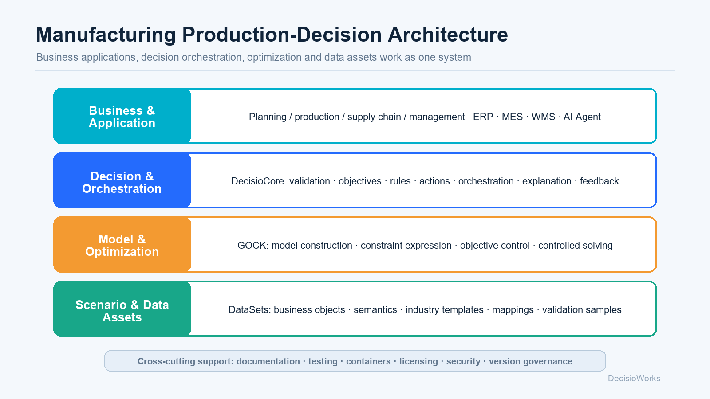
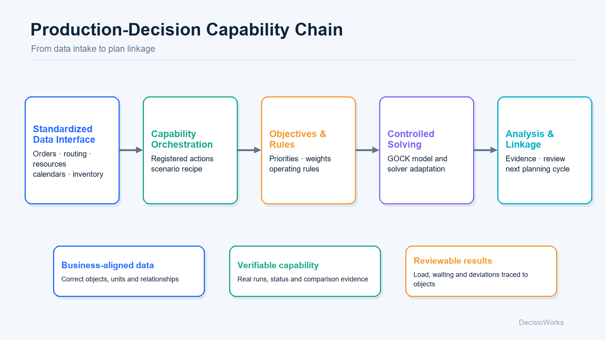

Turn Data into Business Representation
Orders, products, processes, capacity, materials, calendars, and shifts enter a computable structure through standardized data interfaces.
- Data Semantics
- Relationship Integrity
- Structural Constraints
Connect orders, capacity and operating rules to a production decision engine. Generate plans, compare trade-offs and adapt as your business changes.
CAPABILITY CHAIN
Production decision quality depends on more than one optimization run. DecisioWorks organizes input, governance, optimization, and feedback into a complete operational chain.
Orders, products, processes, capacity, materials, calendars, and shifts enter a computable structure through standardized data interfaces.
Delivery, load, inventory, and changeover objectives, together with shop-floor rules and bottlenecks, become configurable decision elements.
DecisioCore reliably maps decision elements to GOCK, producing high-quality plans within explicit constraints and runtime resources.
Aggregate metrics and detailed results explain load, waiting, shortages, and deviations, providing evidence for the next adjustment cycle.
PROJECT STRUCTURE
Business, decision, model, and presentation layers retain clear responsibilities while staying connected through stable interfaces, analysis results, and feedback signals.


FOLLOW A REAL CASE
Start with a business question, then inspect the data, enabled constraints, baseline and adjusted results. The guides use recorded real runs to show how the approach could apply to your business.
The illustrative sandbox retains interactive examples with demonstration values. Recorded solver results are in the case guides.
SCENE EXAMPLES
Examples expose input data, business constraints, runtime processes, and result interpretation instead of hiding capabilities behind abstractions.
Follow 1,920 order lines, capacity and material availability into a plan. Compare planned quantities, load and weighted scores after a re-run.
Use product attributes and process-resource compatibility to build sequences. Inspect changeovers after changing color and container-capacity weights.
Connect order priorities, operation-level materials, shared resources, and objective preferences to demonstrate multi-objective trade-offs and result review.
OPEN & EVOLUTION-FRIENDLY
DecisioWorks allows data sources, business rules, capability orchestration, model adapters, and application interfaces to evolve independently. DecisioCore is an open reference implementation that partners can understand, reuse, and extend across the production decision chain.
Explore partner roles and the adoption path →Standardized interfaces connect ERP, MES, files, and shop-floor data while preserving business semantics.
Standard actions, capability registration, and orchestration recipes reorganize existing capabilities.
A stable adapter layer absorbs underlying evolution and reduces disruption to business systems.
Manufacturers, consultants, and integrators can accumulate scenario knowledge on a shared foundation.
WHITEPAPERS
The product whitepaper establishes the capability map. The solution whitepaper expands it into data preparation, operational validation, integration, and value acceptance.
Explore DecisioWorks positioning, project layers, standardized data interfaces, GOCK, the production-decision capability chain, applicable scenarios, and adoption paths.
Cover data readiness, objectives and shop-floor rules, controlled optimization, result evidence, human review, planning linkage, examples, deployment, acceptance, and staged ROI validation.
EDITIONS
The research edition supports learning and capability evaluation, while the commercial edition is designed for formal business use and continuous operation.
START FROM A REAL SCENE
Manufacturers, industrial parks, solution partners, and ecosystem collaborators are welcome to connect around AI-powered production decisions, smart manufacturing, and industrial software toolkits.